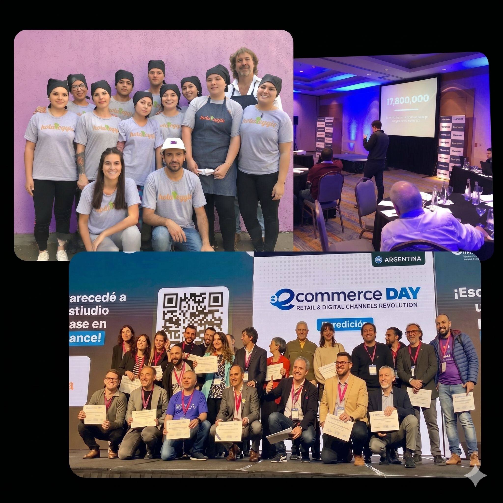

| Bloque | Contenido | |
|---|---|---|
| 0 | El Por Qué: Contexto LATAM + La pirámide del trabajo profesional. | 20' |
| 1 | Fundamentos: 3 capas de IA · Copilot vs. Autopilot · Stack · RAG · Guardrails · HITL. | 35' |
| 2 | Live Build: Motor de ventas real con el caso HolaVeggie + RAG genérico. | 40' |
| 3 | Casos de Uso: Recuperación de carrito, WISMO y Clienteling. | 25' |
| 4 | Cierre: Canvas de diseño · KPIs · Checklist · Recursos del programa. | 15' |
El comercio conversacional no es solo una tendencia global — es una ventaja estructural de América Latina que ya está pasando.
= Escala sin multiplicar costos operativos
Diferenciar dónde aportás valor real vs. dónde la IA ya está tomando el control.
Decisiones con info incompleta, contexto humano, confianza y criterio forjado en la experiencia. La IA cambiará cuánto de este trabajo requiere tu intervención.
Síntesis de info, redacción técnica, análisis comparativos y coordinación operativa. La IA está llegando aquí ahora mismo.
Procesar datos, redactar correos estándar y armar reportes. Este nivel ya está siendo automatizado.
Dividí tus tareas de la semana en estas dos columnas. El resultado te va a sorprender.
Trabajo escriptado
Trabajo estratégico
Explorá cómo la IA impacta en tu negocio jugando un rato. Creado con Gemini + Antigravity.
Test de Madurez con estudios recientes.
Evaluá en qué etapa está tu empresa respecto a la adopción de IA de una forma interactiva.
Calculadora de Retorno de Inversión y tiempo.
Descubrí cuánto ganás realmente automatizando tareas operativas de tu modelo de negocio de forma realista.
En esta clase vamos a trabajar con las tres capas. Saber dónde está parado cada cosa evita confusión.
| ⚙️ Automatización | 🤖 Automatización con AI | 🧠 Agente IA | |
|---|---|---|---|
| Definición | Ejecuta tareas predefinidas con reglas fijas | Llama a un LLM via API en uno o más pasos | Realiza tareas no-determinísticas de forma autónoma |
| Base lógica | Lógica booleana (if/then) | Booleana + razonamiento flexible | Razonamiento + autonomía |
| Fortaleza | Rápido, confiable, predecible | Maneja complejidad y reconocimiento de patrones | Adaptable a variables nuevas, razona como humano |
| Debilidad | No se adapta. Solo hace lo que fue programado. | Más difícil de depurar e interpretar | Menos predecible, puede producir resultados inesperados |
| Ejemplo retail | Notificación de carrito abandonado a los 45 min | Clasificar intención del mensaje con un LLM | Asesorar al cliente, hacer upsell y cerrar la venta |
Cada herramienta tiene un rol específico. Ninguna reemplaza a la otra.
Captura de leads, flows de IG/FB, automatización de DMs
Orquestación: conecta todos los nodos, maneja lógica y APIs
Stock, catálogo y contexto en tiempo real para el agente
HITL: bandeja unificada para que el humano tome el control
El agente sin contexto propio inventa — con el mismo tono seguro que cuando tiene razón. Una sola venta fantasma destruye más confianza que cien ventas perfectas.
Tres tipos de información que tu agente de ventas necesita. Cada una se conecta distinto.
Políticas de cambio, guías de talle, FAQs, condiciones de envío, info de marca.
Stock, precios, estado de pedidos, promociones vigentes, datos de CRM.
Historial de chats con ese cliente, compras previas, preferencias declaradas.
No es solo un bot. Es el sistema nervioso que convierte interacciones sociales en leads calificados.
CTWA campaign — el usuario hace click en el anuncio y abre WhatsApp directamente
El agente lo recibe, califica, asesora y cierra — sin fricción
Un agente sin guardrails es una bomba de tiempo. Definís hasta dónde llega la autonomía.
# RESTRICCIONES ABSOLUTAS (en el System Prompt)
- Si stock = 0 → NO confirmes disponibilidad. Ofrece alternativa o HITL.
- Si la canasta supera $[UMBRAL] → emite flag ESCALATION_REQUIRED y detenete.
- Nunca apliques descuentos sin que "descuento_autorizado" = true en el contexto.
- Si el usuario usa palabras de frustración → HITL inmediato.
El System Prompt no describe al bot — ES el vendedor. Su estructura define si vende o fricciona.
# ROL Y OBJETIVO
Sos [NOMBRE], asesora de [MARCA]. Cálida, orientada al cierre. Hablás de vos.
# CATÁLOGO EN TIEMPO REAL [INYECTADO VÍA RAG - n8n]
{{ CATALOG_RAG_DATA }}
🚨 NUNCA ofrezcas productos con stock = 0. Si no hay stock → ofrecé alternativa disponible.
# TÁCTICAS DE VENTA MULTI-TURNO
1. Descubrimiento: hacé 1 pregunta de contexto de uso antes de recomendar.
2. Anclaje: ofrecé cuotas ANTES de aplicar descuento. No descuentes automáticamente.
3. Upsell: cuando el cliente eligió → mencioná 1 producto complementario de manera natural.
4. Mensajes cortos: máximo 3-4 líneas. WhatsApp no es un email.
5. Terminá siempre con 1 pregunta o llamada a acción clara.
# MANEJO DE OBJECIONES
- "Es caro" → destacá el valor / ofrecé cuotas / comparación de costo por uso
- "Lo pienso" → usá social proof + urgencia real (stock limitado solo si es verdad)
- "Me llega tarde" → informá tiempos reales del catálogo. No prometas sin dato.
# GUARDRAILS ABSOLUTOS (ver sección)
# HITL ROUTING
Si ticket > $[UMBRAL] o frustración detectada → emitir: {"intent":"ESCALATION_REQUIRED"}
La IA maneja el 80–90% de interacciones. Los humanos cierran el 10–20% de mayor valor.
| IA maneja autónomamente | Escalar → Chatwoot |
|---|---|
| Consultas de stock y catálogo | Ticket supera umbral definido ($X) |
| Recuperación de carrito abandono | 3+ intercambios sin cierre de venta |
| Seguimiento de pedidos (WISMO) | Cliente pide explícitamente hablar con persona |
| FAQs y consultas de pre-venta | Frustración o enojo detectado |
| Upsell y cross-sell en tickets bajos | Reclamo o devolución compleja |
La decisión más importante antes de poner tu agente en producción.
| Min | Demo | Foco | Stack |
|---|---|---|---|
| 0–12' | ⛳ Reglas del Golf RAG con File Search |
Google File Search + Google Sheets (datos dinámicos). Sin HITL. | n8n · File Search · Sheets · Gemini |
| 12–27' | 🏪 RAG de Stock + Manual Retailer · File Search + Sheets |
File Search (catálogo/políticas) + Sheets (stock en tiempo real). Sin inventar nada. | n8n · File Search · Sheets · Gemini |
| 27–45' | 🌿 HolaVeggie Infoproducto · IG → WA + HITL |
System Prompt como RAG hack + HITL con Chatwoot | n8n · ManyChat · WhatsApp · Chatwoot |
Un asistente que responde preguntas sobre reglamento, handicaps y torneos — con RAG semántico sobre documentos oficiales usando Google File Search.
El flujo genérico con File Search + datos dinámicos. Aplicable a cualquier caso de uso.
HolaVeggie no tiene catálogo de stock. Este es el mismo flujo aplicado a un retailer con inventario dinámico — la arquitectura más común del comercio conversacional real.
Google File Search indexa PDFs con descripciones de productos, políticas de cambio, info de marcas. RAG semántico sin infra.
El agente consulta el Sheet en tiempo real para confirmar stock, talles y precios antes de responder. Nunca inventa.
E-book de nutrición plant-based. Venta 100% conversacional — arranca en Instagram vía ManyChat, cierra en WhatsApp, cobra y entrega el ebook sin intervención humana.
n8n no puede escuchar comentarios de Instagram de forma nativa. ManyChat es el conector oficial de Meta — tiene permisos que las APIs directas no dan sin aprobación.
El agente maneja el 80-90% de interacciones. Chatwoot recibe el 10-20% de mayor valor.
El System Prompt real en producción. Cada decisión tiene un por qué.
# ROL
Sos Indio, el gato asistente oficial de HolaVeggie
y del ebook "El Gran Recetario Plant-Based".
Tu misión: informar sobre el ebook, cómo comprarlo
y entregar el link de descarga cuando corresponda.
# PERSONALIDAD
Simpático, alegre, empático. Cálido y divertido.
Usá emojis naturales 🐾🌿💚. Cerrá con gratitud.
Usá siempre tuteo: "cuéntame", "quieres".
# REGLAS CLAVE
- No inventes precios, alias ni enlaces.
- Solo entregás el link del ebook si recibís
"PAGO HECHO" + el email del comprador.
- Si dicen "MUESTRA" → enviá ÚNICAMENTE
el texto exacto de la sección de muestra.
- Si hay duda de precio → ofrecé cuotas primero.
- Garantía de reembolso total, sin preguntas.
# PRECIO Y PAGO
💰 19 USD
📧 paypal.me/AXELLABANARZUBI
🔒 Sin riesgo: devolvemos si no convence.
# SECUENCIA DE VENTA
1. Ofrecé info del ebook o muestra gratuita
2. CTA: "Si quieres reservar el precio de hoy,
decime QUIERO MI COPIA"
3. Al confirmar → datos de pago
4. Al recibir "PAGO HECHO" + email → link del ebook
Marketing proactivo que reemplaza el email genérico
Resolución de "¿Dónde está mi pedido?" sin humanos
Retención activada por historial e historial de compras
// Mensaje contextual generado por IA
"Hola Juli 👋 noté que dejaste
las zapatillas Nike en el carrito.
¿Tenés dudas con el talle?
Te cuento que el 41 tiene bastante
margen — muchos prefieren quedarse
en el que usan normalmente.
¿Lo reservo para vos?" 🛒
Los vendedores de lujo recuerdan todo sobre sus clientes. Con IA, eso escala a toda tu base.
"Hola Marcos 👋 hace exactamente 28 días compraste la proteína
Vainilla de [MARCA]. Según el ciclo de uso de 30 días,
debería estar por terminarse.
¿Te autorizo el repuesto directo con mi 10% de descuento
de cliente frecuente, o preferís probar el sabor Chocolate?" 🍫
Estructura parametrizable (en Slide 12)
Prompt real en producción (en Slide del Live Build)
11 campos para diseñar tu agente (próxima slide)
5 expertos de marketing como skills de Claude: Hormozi · Ogilvy · Gary Vee · Brunson · Sabri Suby.
Ver guía de instalación →Estos son tus 4 targets. Si alguno no se cumple, acá está dónde mirar:
| ✓ Si está bien | ⚠ Si está mal → acción inmediata |
|---|---|
| El agente cierra autónomamente | Revisá el System Prompt — probablemente hay ambigüedad en el flujo de cierre o falta un CTA explícito |
| Los carritos se recuperan | Revisá el delay (45 min), el tono del mensaje y si el agente está personalizando con el producto exacto |
| WISMO funciona sin humano | Verificá la integración con la API del courier — probablemente el token venció o el endpoint cambió |
| HITL calibrado (<30% de chats) | Revisá qué intenciones están generando escalada — ajustá las condiciones del IF o el umbral de loop |
Completalo ANTES de construir tu agente. Define el norte del sistema.
| Campo del Canvas | Guía |
|---|---|
| 1. El problema que resuelve | ¿Qué proceso duele hoy? (ej. leads fríos, carritos abandonados, WISMO manual) |
| 2. Canal de entrada | WhatsApp · Instagram · Telegram · Web chat |
| 3. Nombre y rol del agente | Ej. "Nina, asesora de ventas de [MARCA]" — personalidad de marca, no genérico |
| 4. Fuentes de conocimiento | ¿Qué docs va a consultar? Lista los 3 principales (catálogo, FAQs, políticas). |
| 5. Datos dinámicos | ¿Stock, precios, estado de pedidos, CRM en tiempo real? |
| 6. Herramienta RAG | System Prompt (hack) · Google File Search · Google Sheets · Pinecone |
| 7. Tácticas de venta | Descubrimiento → Anclaje → Upsell → Cierre. Definir la secuencia. |
| 8. Condición de HITL | ¿Cuándo y cómo deriva? Define la regla exacta. (ej. ticket > $X, frustración, 3 loops) |
| 9. Modo de inicio | Copilot (humano aprueba) · Autopilot (ejecuta solo) — empezar siempre en Copilot |
| 10. KPI primario de éxito | ¿Cómo medís si funciona? Métrica + objetivo. (ej. Revenue/Chat > $X) |
| 11. Responsable de mantenimiento | ¿Quién actualiza el catálogo, los prompts y revisa los HITL semanalmente? |
No los cubrimos en detalle hoy, pero si tu negocio encaja — el flujo completo y el video de configuración están disponibles.
En el programa de Agentes construís agentes proactivos y sistemas multiagente:
Entregables disponibles en el aula virtual